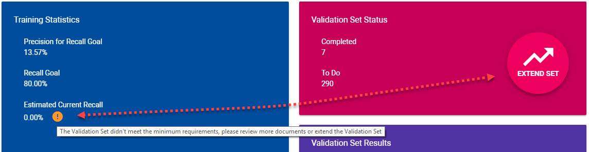
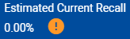

You can extend the Validation Set in the Assisted Review Progress tab.

You can always extend the Validation Set.
However, remember there is only one Validation Set per project. If you extend the Validation Set for an issue, it will be extended for all issues.
Also, it is recommended to review the Validation Set completely before extending it.
When to extend the Validation Set?
Extend the Validation Set when the size of the Validation Set is not sufficient; There are not enough random documents to make a good estimation of the number of responsive documents in the project. If this is the case, you can see a warning icon next to the Estimated Current Recall:

With how many documents will the Validation Set be extended?
The size of the Validation Set will be extended with 10% of the current Validation Set (with a minimum of 50 documents). So for a Validation Set of a 1000 documents, the extension is 100 documents. Click Extend Set again to add another 10%.